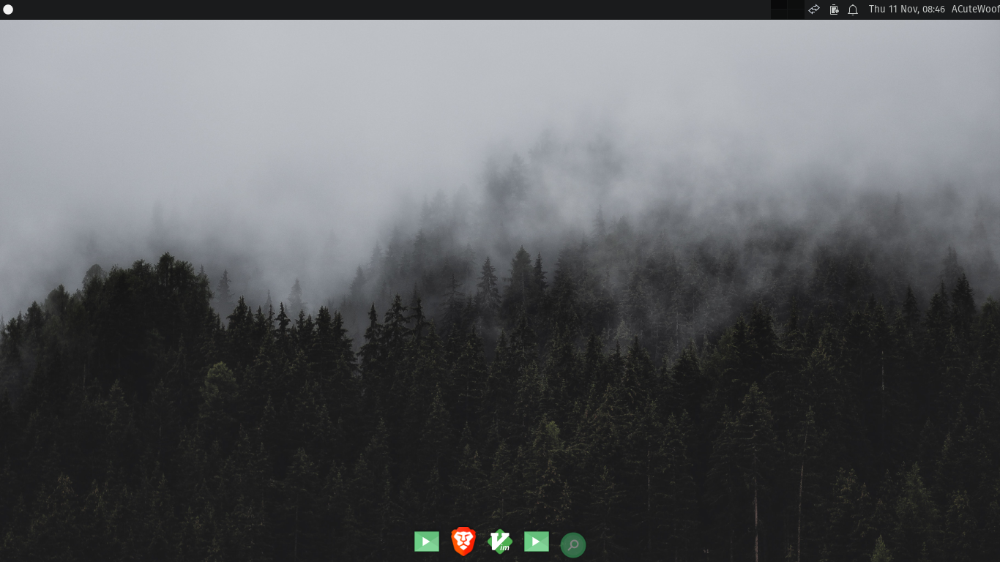
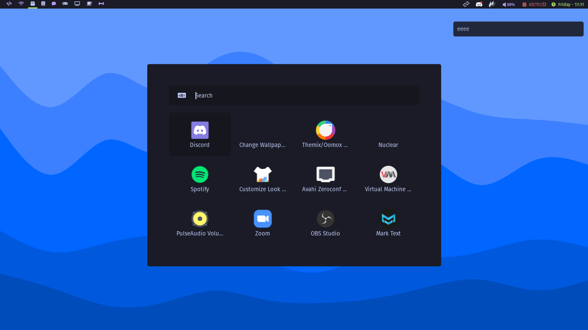

Woof OS
Github
Github
Woof OS
Features
Free & Open Source
Leaf
Beautiful & User Friendly
Rocket
Fast
Downloads

Woof OS Xfce Edition
For beginners. Features the
Xfce
desktop environment.
Download

Woof OS Qtile Edition
For intermediate to advanced users. Features the
Qtile
tiling window manager.
Download